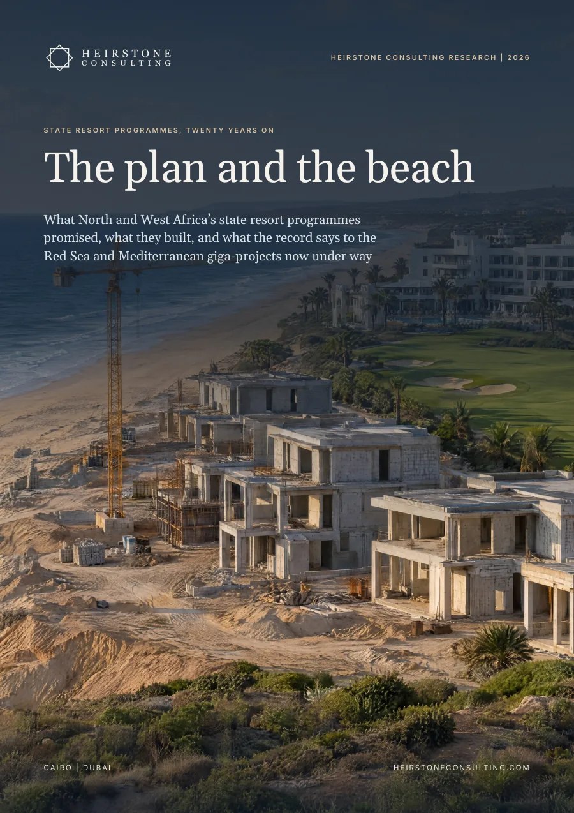
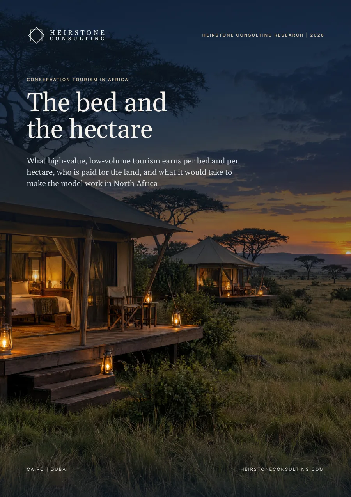
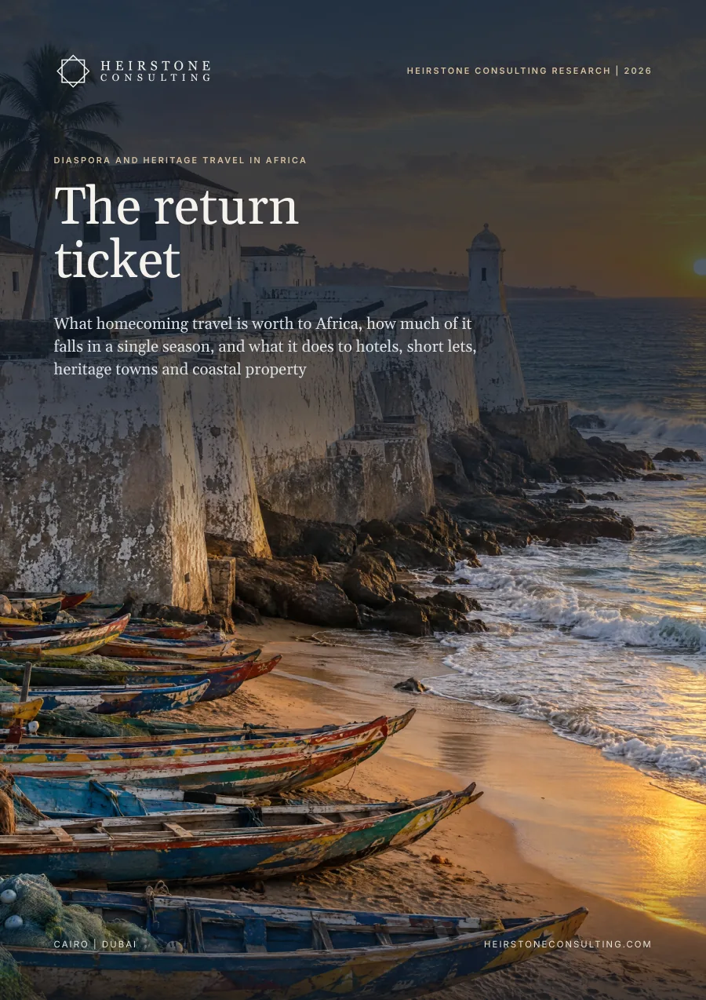
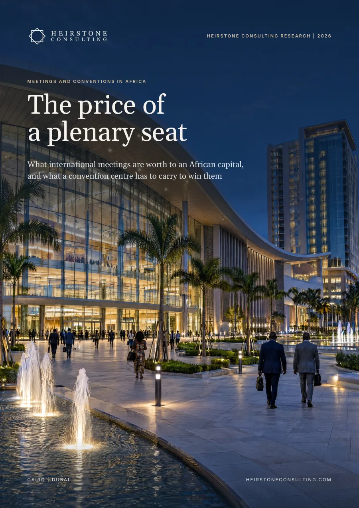
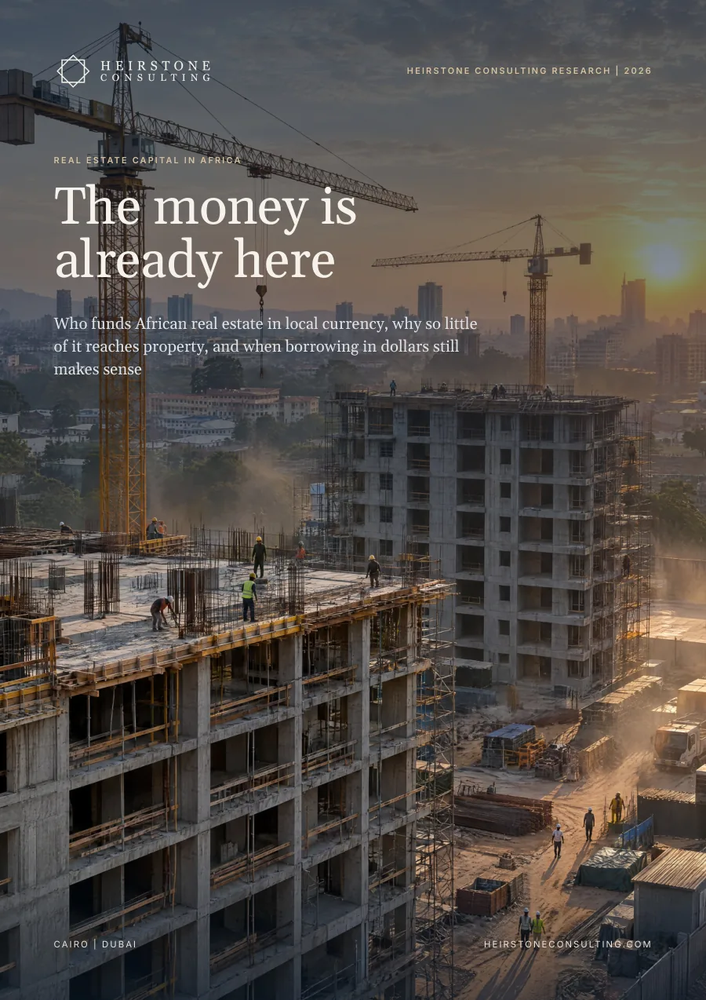
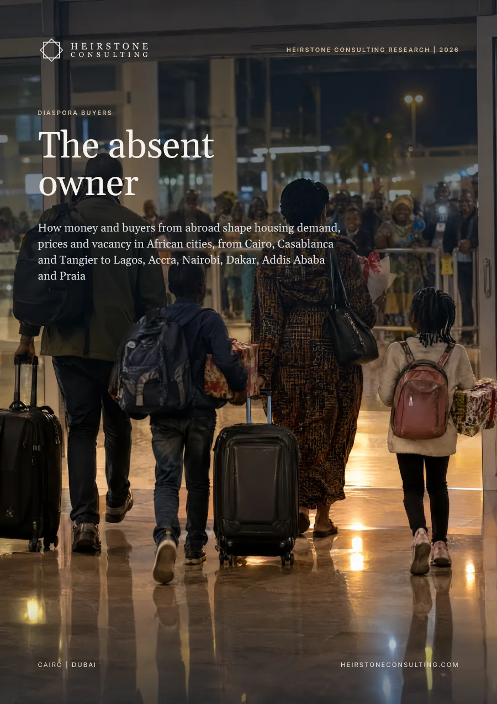

What North and West Africa's state resort programmes promised and built, from Morocco's Plan Azur and Egypt's TDA zones to Tunisia, Senegal and Cabo Verde, and what the record says to the Red Sea and Mediterranean giga-projects now under way.
Also available in French: Programmes publics de stations touristiques, vingt ans après: Le plan et la plage. Choose the language when you request the report.

The report in six numbers
beds in Morocco's six Plan Azur stations in 2023, against 110,786 in the 2008 station plans
of approved hotel rooms reported as constructed in Egypt's four TDA zones at January 2016: 140,004 of 215,521
Yasmine Hammamet's delivery against plan: about 30,000 beds on 277 ha against 24,000 planned, on figures compiled by Wikipédia
room occupancy at El Gouna in FY2023, near Hurghada's 9.6-million-passenger airport, against 42% at its sister resort Taba Heights
of the Azur beds counted against the Vision 2020 target by mid-2015 that were in villas or a hotel residence (Heirstone analysis)
from announcement to first guests at The Red Sea in Saudi Arabia, the fastest in the Ledger, with its own airport opened in September 2023
In brief
We compared state resort programmes in Morocco, Tunisia, Egypt, Senegal, Cabo Verde, Mauritius and Algeria with today's Saudi and Egyptian giga-projects. The record runs from a station that outgrew its plan by a quarter to one with no beds 25 years after launch. Land, roads and permits were the parts states delivered most reliably. Demand depended on airlines and operators they did not control.
Yasmine Hammamet in Tunisia built about 30,000 beds against 24,000 planned. Egypt's Tourism Development Authority reported 140,004 hotel rooms constructed in its zones by 2016, 65% of those approved. Morocco's Plan Azur held about 15,000 beds in 2023 against 110,786 in its 2008 station plans, and Plage Blanche, planned for 30,000 beds, has none.
Between 2008 and 2012 the developers of Saïdia, Lixus and Taghazout failed, withdrew or were replaced. The CDG and FMDT company at Saïdia had invested MAD 1.7bn (US$177m) by 2019, and state-linked shareholders own 75% of Taghazout Bay's developer, which has opened seven hotels since 2015.
In FY2023 El Gouna, near Hurghada, ran at 72% occupancy, 30 points above a sister resort near a far smaller airport. Agadir's traffic rose 54% from 2019 to 2024 as Taghazout Bay opened. Saïdia, with no direct flights from its core markets, fills for about two months a year.
Tunisia's Agence Foncière Touristique says it has created 170,000 beds, and Egypt's TDA dealt with 896 developers. Tunisia's banks carried TND 4bn of hotel debt in 2014, 57.5% of it classified, while the TDA kept the risk with developers and recovered 22.2m m² of idle land in 2015.
The 2008 Azur plans were 32% non-hotel beds, yet 51% of the beds counted against the Vision 2020 target by mid-2015 were in villas or a hotel residence. Homes sell where hotels already work: El Gouna sold 289 in FY2024 at an average US$5,287 per m².
The Red Sea opened its airport and first resort in 2023 and plans 11% of units as residences. Ras El Hekma began with a US$35bn transaction in which Egypt keeps 35%. Its masterplan includes a new international airport, and two hotels were announced in 2026.
What it means
Publish beds or keys delivered against plan for every zone each year, tie the second phase to published seat capacity from target markets and budget at launch for being developer of last resort.
Sell serviced plots to many investors, write build deadlines into every plot and apply them, and cap residential, releasing it as hotel keys open.
Fund the airport and the first hotels together, and count the whole bill: in Senegal's new zones, state infrastructure is 7% of planned investment and hotels 93%.
Underwrite the airport before the beach, limit exposure to a single tour operator and watch hotel debt before the next shock.
Inside the full report
Heirstone datasets
programmes, stations and zones in eight countries in the Heirstone State Resort Ledger, from Port El Kantaoui to the Saudi Red Sea and Ras El Hekma
tests in the Heirstone Station Test: seats, hotels first, many hands, patient owner, use it or lose it, and residential tied to hotels
documented cases scored against the Station Test, from Plan Azur and Yasmine Hammamet to El Gouna and Sal
Built from public sources current at October 2026. Every figure is referenced in the report, and figures we derive by combining published numbers are labelled Heirstone analysis.
They delivered a fraction of the plan: about 15,000 beds in the six stations in 2023 against 110,786 in the 2008 station plans. Saïdia and Taghazout Bay hold at least 70% of what was built, both under state-backed owners, while Plage Blanche, planned for 30,000 beds, has none.
Airline seats are the clearest predictor in the record. El Gouna, 20 km from Hurghada's 9.6-million-passenger airport, ran at 72% in FY2023, against 42% at Taba Heights near an airport that handled 41,142 passengers. Saïdia, without direct core-market routes, fills for about two months a year.
Secure the seats, open hotels first and keep an owner able to wait. The Red Sea reached first guests six years after announcement by building its own airport, the fastest in the Heirstone Ledger. Heirstone's Station Test sets six checks, from seats to residential tied to hotels, for The Red Sea, AMAALA and Ras El Hekma.
Tourism Development
Heirstone Consulting Research

Conservation Tourism in AfricaThe bed and the hectare
Diaspora and Heritage Travel in AfricaThe return ticket
Meetings and Conventions in AfricaThe price of a plenary seat
Real Estate Capital in AfricaThe money is already here
Diaspora BuyersThe absent ownerSpeak directly with a senior partner about your project, asset or programme.
Get in Touch